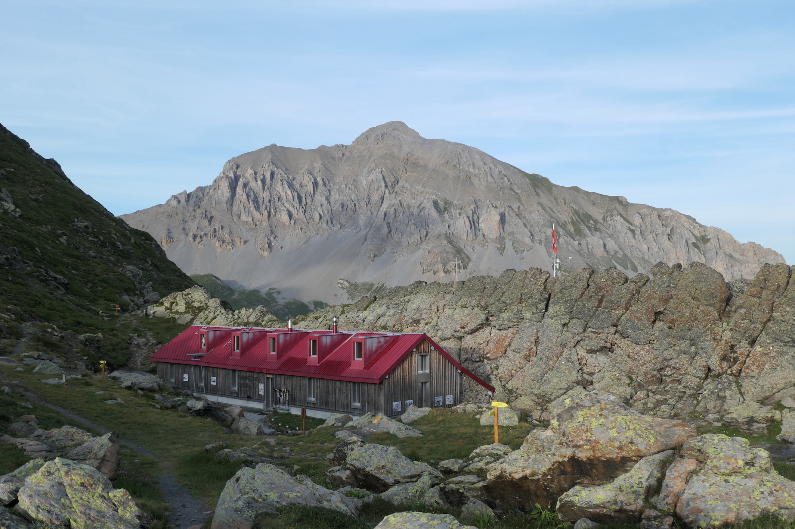
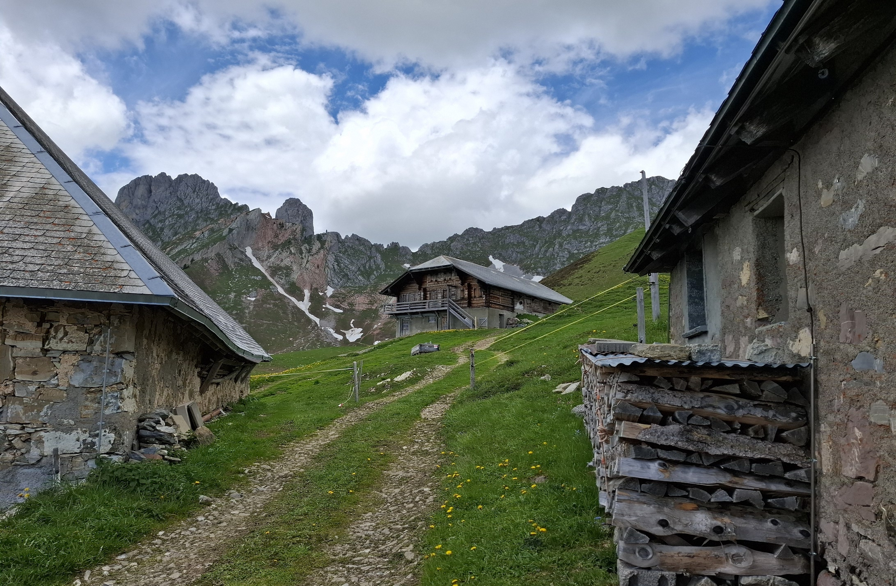
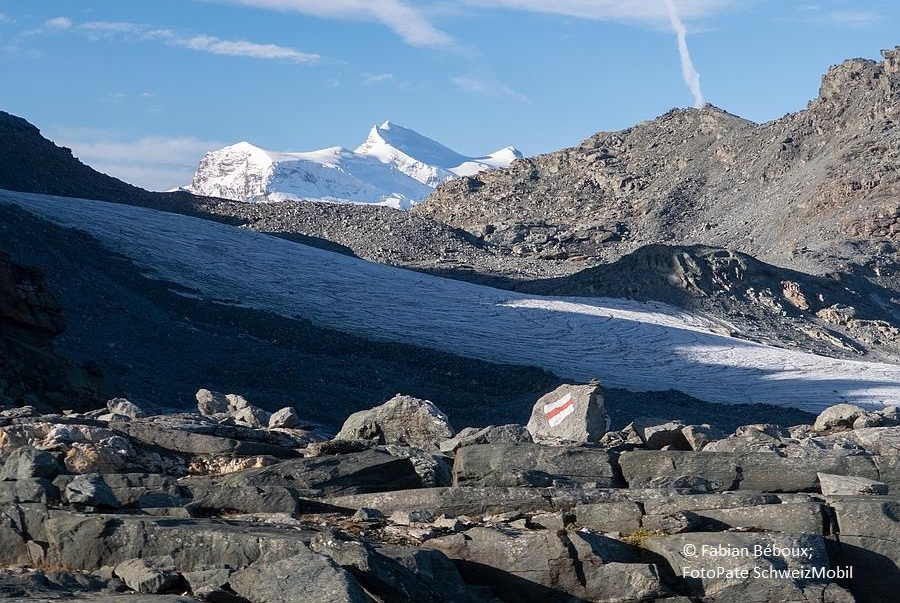

Chaque randonnée est une oeuvre d'art unique, où la nature, l'effort et la découverte se rencontrent pour offrir une expérience.
Treks proposés pour la saison estivale 2025

Tour du Chavalard
Une aventure en pleine nature. Ce séjour est fait pour prendre le temps et permettre de se reconnecter à soi au cœur des montagnes et découvrir des paysages majestueux.
Date: 28 au 29 juin 2025
Durée: 2 jours
Niveau: 2/5
Prix: 250 CHF

Région Gastlosen
Découvrez les Dolomites Suisse au cœur du canton de Fribourg. Partez à la découverte de la richesse géologique de cette région et immergez vous dans l’atmosphère des Préalpes.
Date: 23 au 24 août 2025
Durée: 2 jours
Niveau: 3/5
Prix: 250 CHF

Traversée des 4 vallées
Vivez un séjour hors du temps pour le week-end du Jeûne fédéral. Durant ce trek vous verrez des paysages de haute montagne et séjournerez dans les cabanes de Louvie et Prafleuri.
Date: 20 au 22 septembre 2025
Durée: 3 jours
Niveau: 4/5
Prix: 480 CHF
Partez à l’aventure en pleine nature du 28 au 29 juin. Ce séjour est fait pour prendre le temps et permettre de se reconnecter à soi au cœur des montagnes et découvrir des paysages majestueux. Respirer, contempler et vivre, je vous invite à vous offrir cette pause au sein des Alpes. Ce périple vous emmènera à la cabane de Demècre. Rénovée en 2017, ce lieu a été construit en 1915 comme arrière base pour l’armée.


Localisation: Départ et arrivée à Ovronnaz
Dates: 28 au 29 juin 2025
Niveau: 2/5
Prix: 250 CHF
InscriptionJour 1
Nous débuterons notre aventure à travers des prairies verdoyantes. Vous progresserez dans les paysages montagneux dans l'habitat de la faune sauvage.
Distance: 9km
Dénivelé: 850m D+ et 400m D-
Temps de marche effectif: 5h

Jour 2
Je vous conduirai vers un point de vue spectaculaire sur la vallée du Rhône, où l’horizon se déploie à perte de vue, offrant un panorama impressionnant.
Distance: 12.5km
Dénivelé: 500m D+ et 900m D-
Temps de marche effectif: 5h30


Le prix de 250 CHF comprend l’accompagnement par une accompagnatrice en montagne, la demi-pension en cabane, le pique-nique du 2ème jour ainsi que les remontées mécaniques. Vous pouvez demander le programme complet en me contactant.
Région Gastlosen
Découvrez les Dolomites Suisse au cœur du canton de Fribourg du 23 au 24 août. Partez à la découverte de la richesse géologique de cette région et immergez vous dans l’atmosphère des Préalpes durant 2 jours de marche et d’observation de ce qui nous entoure.


Localisation: Départ et arrivée Vallée du Gros Mont
Dates: 23 au 24 août 2025
Niveau: 3/5
Prix: 250 CHF
InscriptionJour 1
Pour débuter, nous ouvrirons la marche par une ascension, le panorama des Gastlosen se déploiera devant nos yeux.
Distance: 12km
Dénivelé: 1000m D+ et 600m D-
Temps de marche effectif: 6h15

Jour 2
Vous pourrez admirer les Pucelles, au bout de la chaîne des Gastlosen. En poursuivant le trek, vous atteindrez un col qui offre une vue sur la vallée et les crêtes montagneuses environnantes.
Distance: 12km
Dénivelé: 600m D+ et 1000m D-
Temps de marche effectif: 5h45


Le prix de 250 CHF comprend l’accompagnement par une accompagnatrice en montagne, la demi-pension en cabane ainsi que le pique-nique du 2ème jour. Vous pouvez demander le programme complet en me contactant. Vous pouvez demander le programme complet en me contactant.
Traversée des 4 vallées
Vivez un séjour hors du temps pour le week-end du Jeûne fédéral. Durant ce trek vous verrez des paysages de haute montagne et séjournerez dans les cabanes de Louvie et Prafleuri.


Localisation: Départ de Fionnay, arrivée à les Collons
Dates: 20 au 22 septembre 2025
Niveau: 4/5
Prix: 480 CHF
InscriptionJour 1
Départ du trek en douceur avec une petite journée de marche.
Distance: 5km
Dénivelé: 800m D+ et 60m D-
Temps de marche effectif: 3h30
Jour 2
Glaciers et petits lacs de montagnes feront partie du paysage pour ce deuxième jour.
Distance: 11km
Dénivelé: 1160m D+ et 750m D-
Temps de marche effectif: 7h
Jour 3
Nous quitterons l’univers alpin progressivement pour traverser le Val d’Hérémence.
Distance: 15.5km
Dénivelé: 360m D+ et 1200m D-
Temps de marche effectif: 6h30


Le prix de 480 CHF comprend l’accompagnement par une accompagnatrice en montagne, les demi-pensions en cabane, les pique-nique du 2ème et 3ème jours. Vous pouvez demander le programme complet en me contactant.